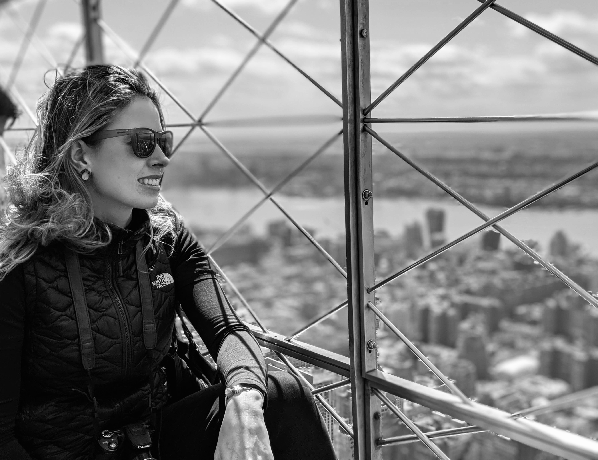

Míriam Cristina Guimarães Junqueira
Me considero uma pessoa alegre, e que tenta aproveitar ao máximo cada instante.
Amo design de interiores.
Amo viajar.
Meu sonho é conhecer o Egito.
APAIXONADA por comida italiana e bons vinhos.
Sou uma mãe extremamente dedicada
Nasci em Belo Horizonte, MinasGerais, Brasil.
Atualmente resido em Belo Horizonte.
Habilidades: